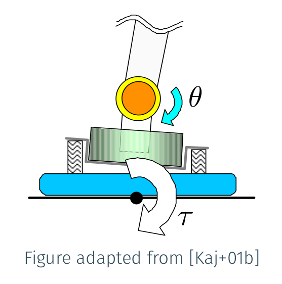

One topic that comes out often (e.g. 1, 2, 3, 4) in technical discussions around linear inverted pendulum tracking is the regulation of contact forces by damping control. Let us review the working assumptions and model behind this choice.
Flexibility model
Robots from the HRP series have inherited from their Honda elders the addition of a mechanical flexibility between the ankle and sole of each foot. This flexibility is implemented by rubber bushes, which we can model as springs with an overall stiffness coefficient K, and linear dampers, with an overall damping coefficient B. We can model this flexibility with a second-order system of parallel/series springs and dampers, or we can aim for a simpler model with some more assumptions.

Kajita et al. (2001) observed that, at the ankle velocities used in practice by adult-size humanoids while walking, the stiffness term of a second-order model seemed to dominate its damping. That is, KΔθ≫BΔθ˙ where θ is an angle (roll or pitch) between the ankle and sole frames. They then proposed a first-order ground reaction torque model:
τ=Ke(θ−θe)Here, τ is the reaction torque from the environment on the ankle link (applied via the flexibility), Ke>0 is a stiffness coefficient, θ is the angle between the ankle and the sole, and θe is the rest angle of the flexibility joint. The latter angle is fixed, so that the time-derivative of this expression is:
τ˙=Keθ˙Damping control, a form of admittance control, is the control law that applies the following angular velocity:
θ˙=A(τd−τ)where τd is a desired reaction torque, for instance computed to achieve a given center of pressure, and A>0 is an admittance coefficient. Admittance control is, generally, how our position- or velocity-controlled robots regulate interaction forces with their environments. It assumes we have some way of estimating the reaction torque τ, for instance via a force-torque sensor.
In closed loop, the damping control law yields:
τ˙=KeA(τd−τ)Since by design KeA>0, this closed-loop system is stable and converges τ→τd as t→∞. In this derivation we only considered a single joint axis, while typically humanoid feet have two (roll and pitch) and other robot designs may have more. The common supplementary hypothesis to stitch all axes together is to assume they behave independently. Each axis will have its own (a priori unknown) stiffness coefficient Ke, and therefore its own (hand-tuned) admiittance A.
Roles of the flexibility
Mechanical flexibility at contact interfaces (e.g. hands or feet) reduce the rigidity Ke of contact interactions with the environment. This is property is often helpful. For one, if the robot senses forces through force-torque sensors, adding flexibility will protect those sensors from hard impacts, which was the design motivation mentioned by Hirai et al. (1998) in the first report on the development of Honda humanoid robots. Another benefit, less frequently mentioned but not the least, is that a lower Ke reduces the control frequency required for successful damping control, as we will see below.
One downside of an increased flexibility is that our sensing and admittance control laws are based on the assumption that its deflection is small. The deflection is the orientation of the sole frame with respect to the ankle frame, denoted by θ in our model. The larger the deflection, the worse our control becomes. That's why most works dealing with HRP robots aim to keep this deflection small, for instance by minimizing ankle torques.
Link with sampling frequency
We now discuss how a lower contact stiffness Ke lowers the control frequency required for successful damping control. The closed-loop behavior we have derived above is for a continuous system, but in practice our robots are discrete systems with cascaded control loops. Denote by δt the sampling period of our damping control loop. At each loop cycle k, we set a new target velocity to the underlying joint controller (assumed to converge fast enough so that we don't have to model its dynamics):
θ˙[k]=A(τd−τ[k])Let us assume in what follows that θe=0 and τd=0; this will make formulas simpler while not affecting our stability analysis. Integrating our commanded velocity until the next loop cycle yields:
τ[k+1]=(1−AKeδt)τ[k]Stability of this discrete-time system requires ∣1−AKeδt∣<1, that is:
0<AKeδt<2The first inequality is straightforward: Ke>0 by definition, A>0 by design, and δt>0 is the sampling period. The second inequality leads us to:
Aδt<Ke2This model shows how a more rigid contact (that is, a larger stiffness Ke) requires us to either lower the sampling period δt, i.e. perform damping control at higher frequency, or switch to a lower admittance A. Incidentally, this short analysis also shows how, in this model, the admittance value that brings the reaction torque to its target fastest (dead-beat control) is A=(Keδt)−1. Once the contact interface has been designed, tuning admittances is thus a way of estimating the model parameter Ke that fits observations best.
To go further
The use of damping control to regulate contact centers of pressure and vertical force differences was proposed in Kajita et al. (2010). The combination of these control laws using quadratic programming, termed whole-body admittance control, was later used to extend this framework to stair climbing in Caron et al. (2019). Most of the questions that prompted this note arose in the Discussions forum of the corresponding open source controller.
Works like De Magistris et al. (2016) considered a more general stiffness mapping K from Lie-algebra twists (6D displacements) to reaction wrenches (6D forces), while retaining the assumption that stiffness dominates damping in contact dynamics. In contrast, the work on vertical vibration suppression in Kajita et al. (2013) asserted that damping could not be neglected along the contact normal for HRP-4, and extended the first-order model to a set of series-parallel spring-dampers. There is also a broader overview of visco-elastic contact models and their integration with whole-body control in Flayols et al. (2019).
This topic was also discussed in the context of low-frequency motion control software at the Humanoids 2022 Tutorial on Challenge-driven Learning of Humanoid Robot Control in Virtual Environments.
Discussion
Feel free to post a comment by e-mail using the form below. Your e-mail address will not be disclosed.